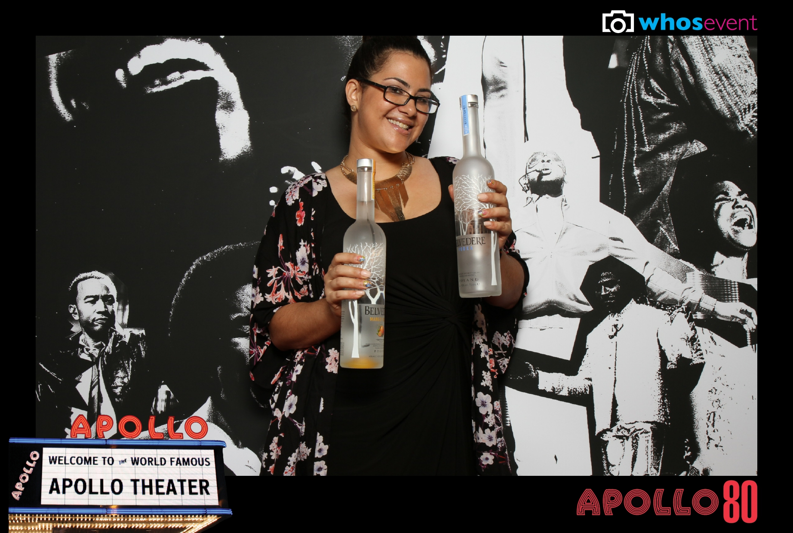
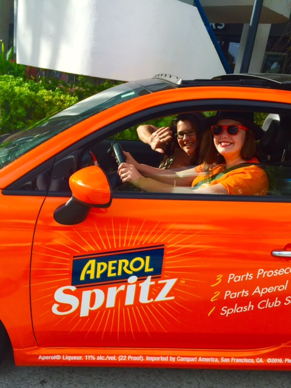
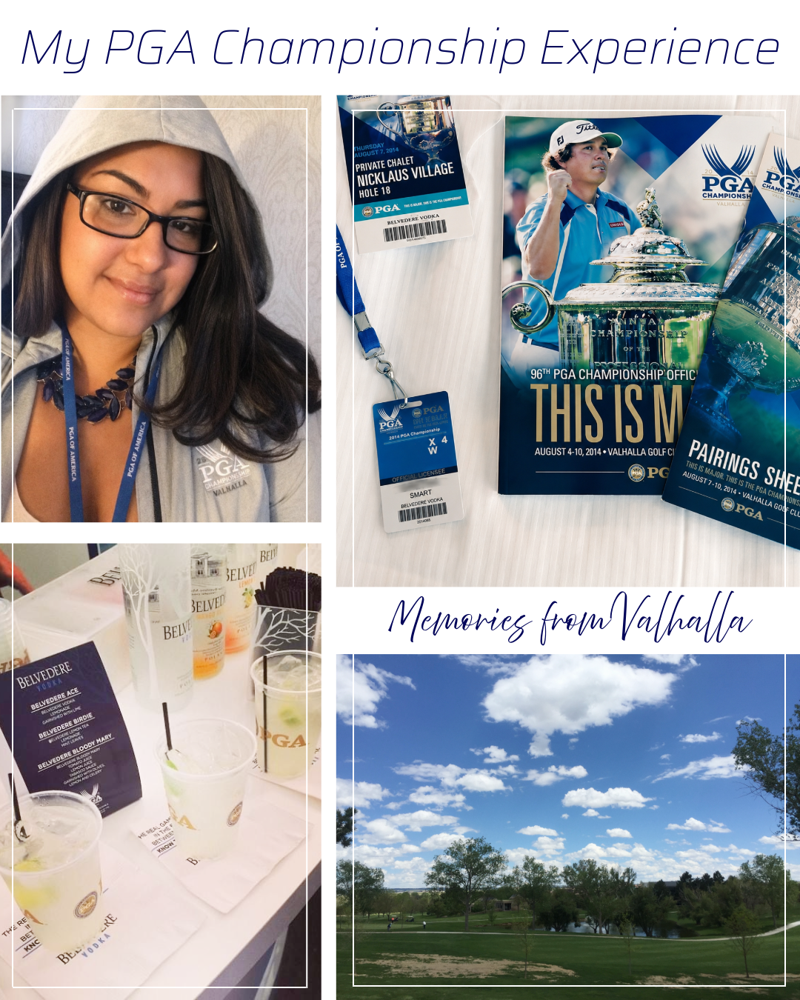
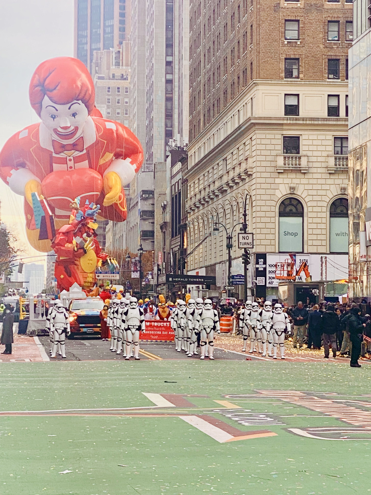
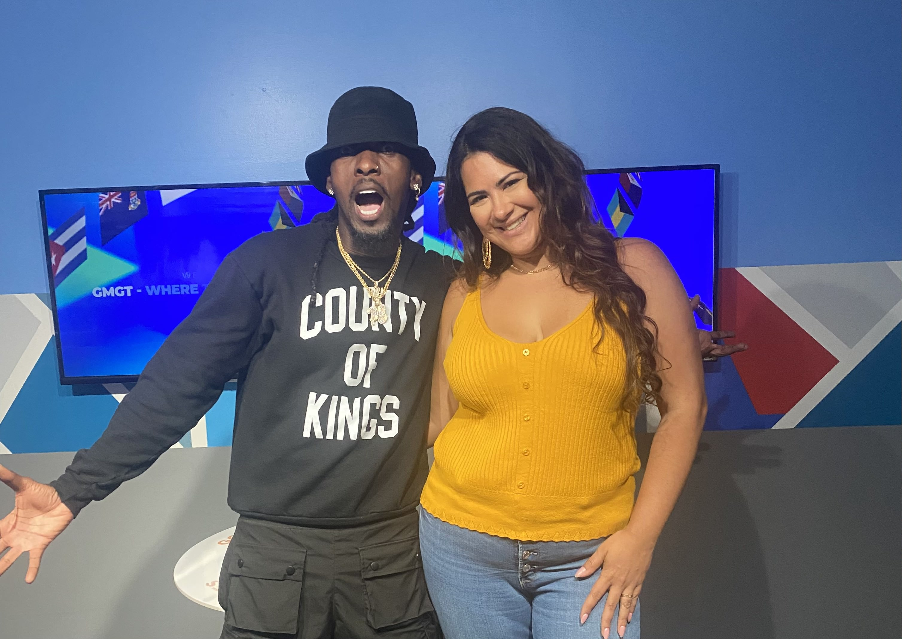

Q: What goes into crafting the perfect brand experience for names like Moët Hennessy and Campari?
I worked on the 123 Spritz campaign for Aperol, taking branded Fiats across the country for various activations. For Espolón Tequila, we hosted experiential bartender cocktail fights. With Moët Hennessy, we traveled to Kentucky as VIP sponsors for the PGA, creating special menu events—I even got a golf lesson with Arnold Palmer. Having the right specialty cocktail menu can truly transform an event.



Q: How did working in HR and Learning & Development lead to managing Stormtroopers at the Thanksgiving Day Parade?
I had the opportunity to manage specific performance groups at the Macy's Thanksgiving Day Parade. My favorite time was managing the Stormtroopers—men with authentic, George Lucas-approved replica costumes. Another year, I managed the Coach float featuring Billy Porter and a circus group. It’s always freezing and incredibly early, but seeing the balloons inflate and watching rehearsals is an awesome experience.

Q: What drives "The News Beat," and how does studying Web and Mobile Development tie into your creative evolution?
The driving force behind The News Beat is curating local NYC and Caribbean diaspora entertainment news, with the goal of syndicating these segments nationally. Being a full-time web development student allows me to learn coding, editing, and content creation. These skills strengthen my creative work and give me the self-reliance to build and manage my own platforms.


